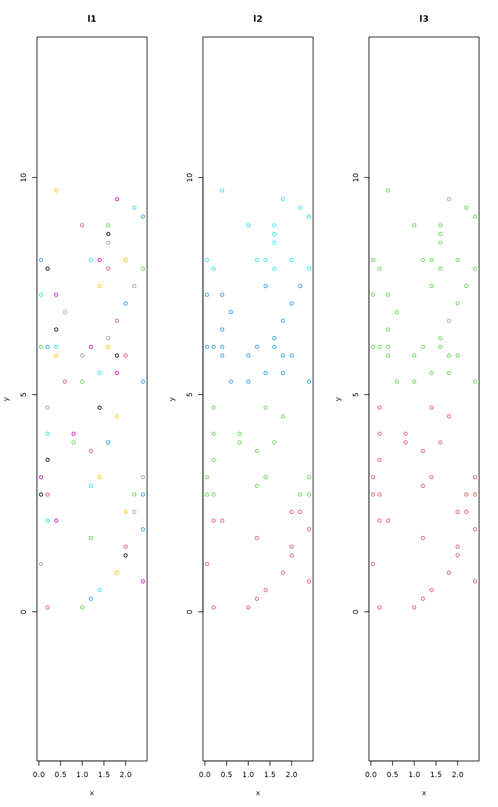

adipart.RdIn additive diversity partitioning, mean values of alpha diversity at lower levels of a sampling
hierarchy are compared to the total diversity in the entire data set (gamma diversity).
In hierarchical null model testing, a statistic returned by a function is evaluated
according to a nested hierarchical sampling design (hiersimu).
adipart(...) # S3 method for default adipart(y, x, index=c("richness", "shannon", "simpson"), weights=c("unif", "prop"), relative = FALSE, nsimul=99, method = "r2dtable", ...) # S3 method for formula adipart(formula, data, index=c("richness", "shannon", "simpson"), weights=c("unif", "prop"), relative = FALSE, nsimul=99, method = "r2dtable", ...) hiersimu(...) # S3 method for default hiersimu(y, x, FUN, location = c("mean", "median"), relative = FALSE, drop.highest = FALSE, nsimul=99, method = "r2dtable", ...) # S3 method for formula hiersimu(formula, data, FUN, location = c("mean", "median"), relative = FALSE, drop.highest = FALSE, nsimul=99, method = "r2dtable", ...)
| y | A community matrix. |
|---|---|
| x | A matrix with same number of rows as in |
| formula | A two sided model formula in the form |
| data | A data frame where to look for variables defined in the
right hand side of |
| index | Character, the diversity index to be calculated (see Details). |
| weights | Character, |
| relative | Logical, if |
| nsimul | Number of permutations to use. If |
| method | Null model method: either a name (character string) of
a method defined in |
| FUN | A function to be used by |
| location | Character, identifies which function (mean or median) is to be used to calculate location of the samples. |
| drop.highest | Logical, to drop the highest level or not. When
|
| ... | Other arguments passed to functions, e.g. base of
logarithm for Shannon diversity, or |
Additive diversity partitioning means that mean alpha and beta diversities add up to gamma diversity, thus beta diversity is measured in the same dimensions as alpha and gamma (Lande 1996). This additive procedure is then extended across multiple scales in a hierarchical sampling design with \(i = 1, 2, 3, \ldots, m\) levels of sampling (Crist et al. 2003). Samples in lower hierarchical levels are nested within higher level units, thus from \(i=1\) to \(i=m\) grain size is increasing under constant survey extent. At each level \(i\), \(\alpha_i\) denotes average diversity found within samples.
At the highest sampling level, the diversity components are calculated as $$\beta_m = \gamma - \alpha_m$$ For each lower sampling level as $$\beta_i = \alpha_{i+1} - \alpha_i$$ Then, the additive partition of diversity is $$\gamma = \alpha_1 + \sum_{i=1}^m \beta_i$$
Average alpha components can be weighted uniformly
(weight="unif") to calculate it as simple average, or
proportionally to sample abundances (weight="prop") to
calculate it as weighted average as follows $$\alpha_i =
\sum_{j=1}^{n_i} D_{ij} w_{ij}$$ where
\(D_{ij}\) is the diversity index and \(w_{ij}\) is the weight
calculated for the \(j\)th sample at the \(i\)th sampling level.
The implementation of additive diversity partitioning in
adipart follows Crist et al. 2003. It is based on species
richness (\(S\), not \(S-1\)), Shannon's and Simpson's diversity
indices stated as the index argument.
The expected diversity components are calculated nsimul times
by individual based randomisation of the community data matrix. This
is done by the "r2dtable" method in oecosimu by
default.
hiersimu works almost in the same way as adipart, but
without comparing the actual statistic values returned by FUN
to the highest possible value (cf. gamma diversity). This is so,
because in most of the cases, it is difficult to ensure additive
properties of the mean statistic values along the hierarchy.
An object of class "adipart" or "hiersimu" with same
structure as oecosimu objects.
Crist, T.O., Veech, J.A., Gering, J.C. and Summerville, K.S. (2003). Partitioning species diversity across landscapes and regions: a hierarchical analysis of \(\alpha\), \(\beta\), and \(\gamma\)-diversity. Am. Nat., 162, 734--743.
Lande, R. (1996). Statistics and partitioning of species diversity, and similarity among multiple communities. Oikos, 76, 5--13.
See oecosimu for permutation settings and
calculating \(p\)-values. multipart for multiplicative
diversity partitioning.
## NOTE: 'nsimul' argument usually needs to be >= 99 ## here much lower value is used for demonstration data(mite) data(mite.xy) data(mite.env) ## Function to get equal area partitions of the mite data cutter <- function (x, cut = seq(0, 10, by = 2.5)) { out <- rep(1, length(x)) for (i in 2:(length(cut) - 1)) out[which(x > cut[i] & x <= cut[(i + 1)])] <- i return(out)} ## The hierarchy of sample aggregation levsm <- with(mite.xy, data.frame( l1=1:nrow(mite), l2=cutter(y, cut = seq(0, 10, by = 2.5)), l3=cutter(y, cut = seq(0, 10, by = 5)), l4=cutter(y, cut = seq(0, 10, by = 10)))) ## Let's see in a map par(mfrow=c(1,3)) plot(mite.xy, main="l1", col=as.numeric(levsm$l1)+1, asp = 1) plot(mite.xy, main="l2", col=as.numeric(levsm$l2)+1, asp = 1) plot(mite.xy, main="l3", col=as.numeric(levsm$l3)+1, asp = 1)#> adipart object #> #> Call: adipart(y = mite, index = "richness", nsimul = 19) #> #> nullmodel method ‘r2dtable’ with 19 simulations #> options: index richness, weights unif #> alternative hypothesis: statistic is less or greater than simulated values #> #> statistic SES mean 2.5% 50% 97.5% Pr(sim.) #> alpha.1 15.114 -36.377 22.374 22.088 22.343 22.834 0.05 * #> gamma 35.000 0.000 35.000 35.000 35.000 35.000 1.00 #> beta.1 19.886 36.377 12.626 12.166 12.657 12.912 0.05 * #> --- #> Signif. codes: 0 ‘***’ 0.001 ‘**’ 0.01 ‘*’ 0.05 ‘.’ 0.1 ‘ ’ 1adipart(mite ~ ., levsm, index="richness", nsimul=19)#> adipart object #> #> Call: adipart(formula = mite ~ ., data = levsm, index = "richness", #> nsimul = 19) #> #> nullmodel method ‘r2dtable’ with 19 simulations #> options: index richness, weights unif #> alternative hypothesis: statistic is less or greater than simulated values #> #> statistic SES mean 2.5% 50% 97.5% Pr(sim.) #> alpha.1 15.114 -36.4611 22.34060 22.03214 22.35714 22.639 0.05 * #> alpha.2 29.750 -24.5197 34.84211 34.50000 35.00000 35.000 0.05 * #> alpha.3 33.000 0.0000 35.00000 35.00000 35.00000 35.000 0.05 * #> gamma 35.000 0.0000 35.00000 35.00000 35.00000 35.000 1.00 #> beta.1 14.636 6.9804 12.50150 11.95571 12.50714 12.942 0.05 * #> beta.2 3.250 14.8892 0.15789 0.00000 0.00000 0.500 0.05 * #> beta.3 2.000 0.0000 0.00000 0.00000 0.00000 0.000 0.05 * #> --- #> Signif. codes: 0 ‘***’ 0.001 ‘**’ 0.01 ‘*’ 0.05 ‘.’ 0.1 ‘ ’ 1## Hierarchical null model testing ## diversity analysis (similar to adipart) hiersimu(mite, FUN=diversity, relative=TRUE, nsimul=19)#> hiersimu object #> #> Call: hiersimu(y = mite, FUN = diversity, relative = TRUE, nsimul = 19) #> #> nullmodel method ‘r2dtable’ with 19 simulations #> #> alternative hypothesis: statistic is less or greater than simulated values #> #> statistic SES mean 2.5% 50% 97.5% Pr(sim.) #> level_1 0.76064 -75.754 0.93930 0.93512 0.93945 0.9428 0.05 * #> leve_2 1.00000 0.000 1.00000 1.00000 1.00000 1.0000 1.00 #> --- #> Signif. codes: 0 ‘***’ 0.001 ‘**’ 0.01 ‘*’ 0.05 ‘.’ 0.1 ‘ ’ 1hiersimu(mite ~., levsm, FUN=diversity, relative=TRUE, nsimul=19)#> hiersimu object #> #> Call: hiersimu(formula = mite ~ ., data = levsm, FUN = diversity, #> relative = TRUE, nsimul = 19) #> #> nullmodel method ‘r2dtable’ with 19 simulations #> #> alternative hypothesis: statistic is less or greater than simulated values #> #> statistic SES mean 2.5% 50% 97.5% Pr(sim.) #> l1 0.76064 -70.226 0.93931 0.93495 0.93987 0.9438 0.05 * #> l2 0.89736 -216.285 0.99811 0.99740 0.99807 0.9989 0.05 * #> l3 0.92791 -476.160 0.99936 0.99911 0.99938 0.9996 0.05 * #> l4 1.00000 0.000 1.00000 1.00000 1.00000 1.0000 1.00 #> --- #> Signif. codes: 0 ‘***’ 0.001 ‘**’ 0.01 ‘*’ 0.05 ‘.’ 0.1 ‘ ’ 1## Hierarchical testing with the Morisita index morfun <- function(x) dispindmorisita(x)$imst hiersimu(mite ~., levsm, morfun, drop.highest=TRUE, nsimul=19)#> hiersimu object #> #> Call: hiersimu(formula = mite ~ ., data = levsm, FUN = morfun, #> drop.highest = TRUE, nsimul = 19) #> #> nullmodel method ‘r2dtable’ with 19 simulations #> #> alternative hypothesis: statistic is less or greater than simulated values #> #> statistic SES mean 2.5% 50% 97.5% Pr(sim.) #> l1 0.52070 5.2935 0.361706 0.319017 0.362010 0.4080 0.05 * #> l2 0.60234 12.1078 0.142990 0.056482 0.148891 0.1905 0.05 * #> l3 0.67509 18.3684 -0.212835 -0.269210 -0.222593 -0.1226 0.05 * #> --- #> Signif. codes: 0 ‘***’ 0.001 ‘**’ 0.01 ‘*’ 0.05 ‘.’ 0.1 ‘ ’ 1